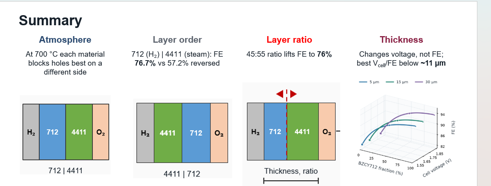

Projects
FEM Phase-Field Fracture Simulation
Finite-element phase-field simulations of crack evolution, including damage localization and the associated stress fields.
Read more
Mechanical Stability of Solid Oxide Cells
Mechanical response and structural reliability of solid oxide cells under thermal and redox loading.
Read moreBilayer Electrolyte Design
Effects of atmosphere, layer order, layer ratio and thickness on bilayer electrolyte performance.
Read more